Na área de trabalho do Android Studio, clicar com o botão direito do mouse sobre o pacote LibClass, em seguida em posicionar o mouse sobre New e clicar na opção Java Class (figura 1). Para todas as demais criações de Classes vamos proceder dessa mesma maneira obedecendo o empacotamento adotado.
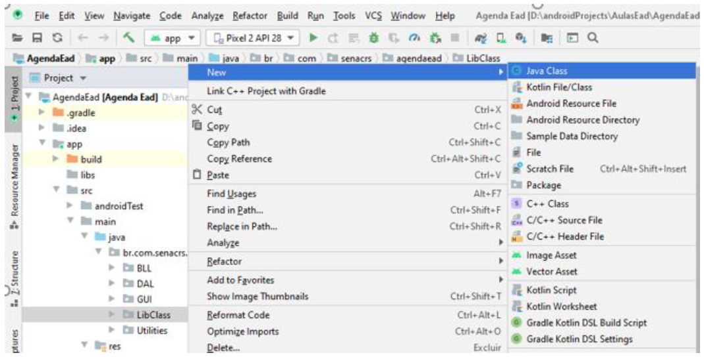
Será exibida a janela New Java Class. Nessa janela preencer o nome da classe com o valor Contact e manter todas as seleções conforme a figura 2
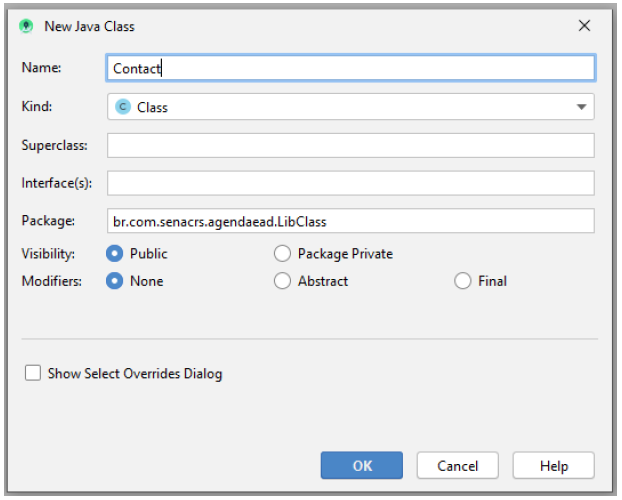
Após o clique em OK, na área de trabalho do Android Studio, será exibido o arquivo para ser editado figura 3
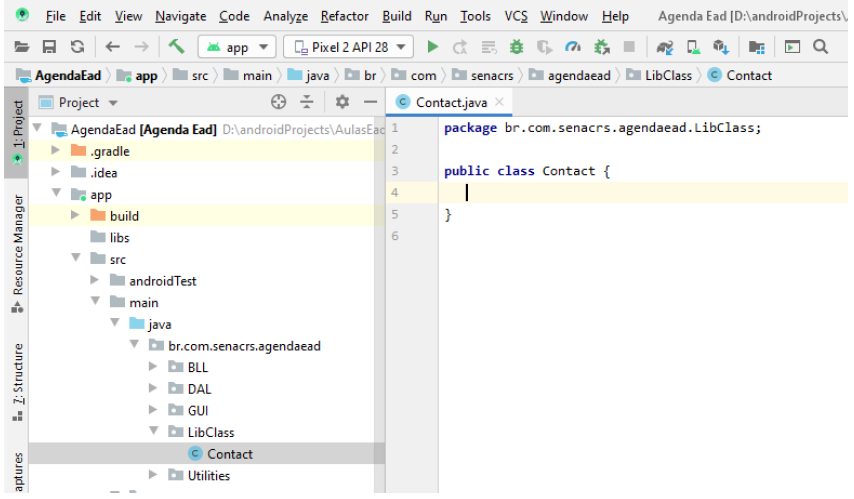
Agora podemos criar e encapsular nossos atributos, bem como, criar os métodos acessores (gets) e modificadores sets. Abaixo o código da classe Contact com base na definição do aplicativo do material Android com Banco de Dados - Parte I
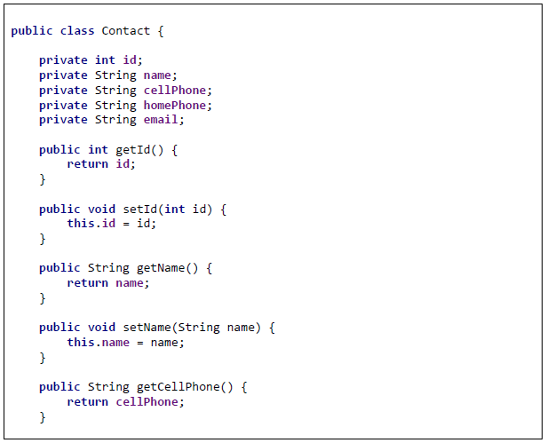
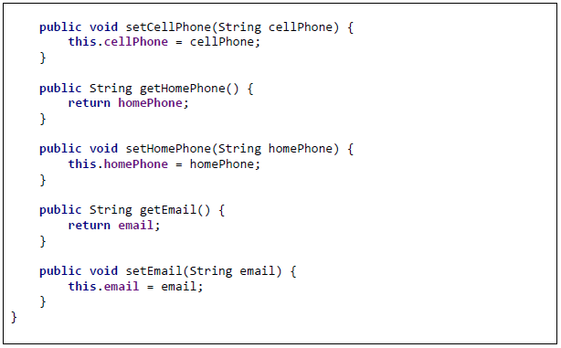
Na área de trabalho do Android Studio, clicar com o botão direito do mouse sobre o pacote DAL, em seguida, posicionar o mouse sobre New e clicar na opção Java Class (figura 4). Para todas as demais criações de Classes vamos proceder dessa mesma maneira.
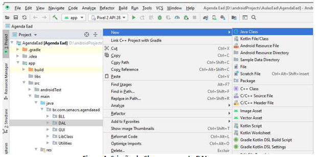
Será exibida a janela New Java Class. Nessa janela preencher o nome da classe com o valor DataBank e manter todas as seleções conforme a figura 5.
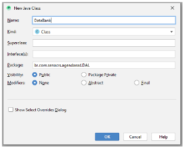
Após o clique em OK, na área de trabalho do ANdroid Studio será exibido o arquivo para ser editado (figura 6).
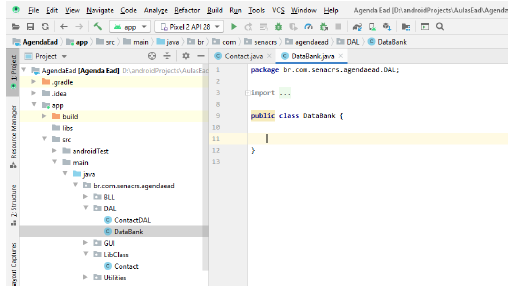
A classe DataBank deve estender de SQLiteOpenHelper, ou seja, deve herdar todas as características da Classe mãe.
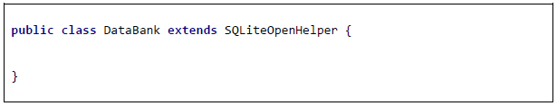
Note que nossa classe apresenta erros, neste momento, esses erros, são exibidos por conta da falta dos métodos que existem na Classe mãe. Para corrigir, utilizaremos a Bug Light do Androd Studio (figura 7).
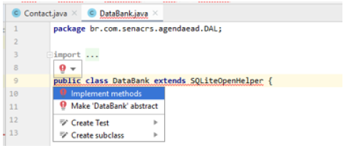
Note que, mesmo com os métodos criados, a classe ainda persiste com erro. Abaixo o código da classe DataBank.
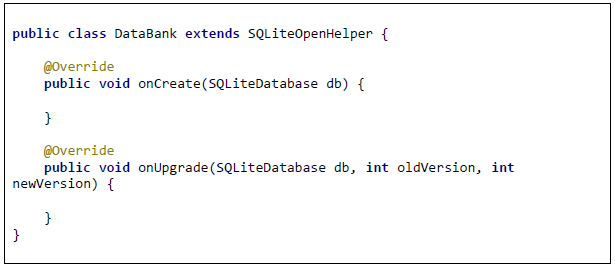
Por conta do erro que persiste, para corrigir, utilizaremos a Bug Light do Android Studio novamente figura 8.
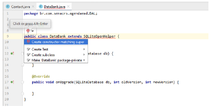
Agora a classe Databank está pronta para receber a codificação, conforme podemos observar abaixo.
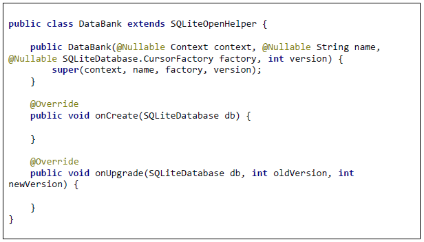
Mesmo estando pronta, existem pequenas alterações a serem realizadas, que devem ser feitas de acordo com o código abaixo. Os comentários no código são para o entendimento das implementações
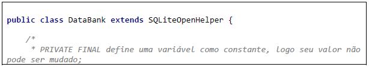
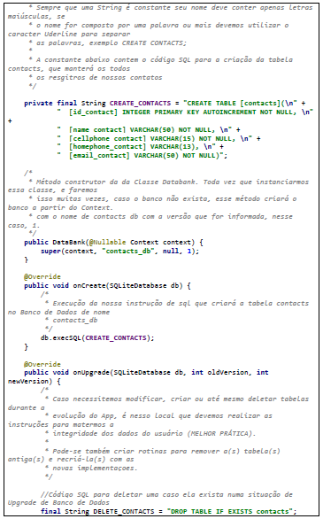
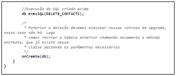